讀眼與塔羅
Eye Reading — 西藏脈動的診斷工具，與器官圖卡的對話
什麼是讀眼術
「讀眼術是個工具，用來幫助了解人的能量屬性，知道用什麼 session 去順暢能量。」 ——Vidya
讀眼術透過觀察眼睛（尤其是虹膜）判斷哪個器官有負電印記， 從而確定該給予哪個器官、哪個色波的 New Mind 工作。 它不是預言——不看未來、不是靈通能力，而是照見能量流動的當下狀態。
與西方虹膜學的差異
| 項目 | 西方虹膜學 | 西藏脈動讀眼術 |
|---|---|---|
| 創始 | Bernard Jensen（美）等 | Dheeraj |
| 看的內容 | 身體器官的物質狀態 | 器官的能量屬性（電氣循環狀態） |
| 診斷目的 | 了解身體狀況 | 知道使用哪種 New Mind session |
| 學習前提 | 無特別前提 | 必須先學過西藏脈動 |
「沒學過西藏脈動，不適合學讀眼術，否則很容易流於貼標籤。」——Vidya
讀眼的符號語言
每個器官在左右眼各有一組符號，由四大電流的基本符號疊加而成：
| 基本符號 | 電流 | 系統意義 |
|---|---|---|
| ＋ | 交流電 | Unison（整體） |
| △ | 靜電 | Mind（頭腦） |
| ○ | 磁電 | Emotion（情緒） |
| □ | 直流電 | DC（行動） |
二十四個器官依時鐘位置排列在虹膜上（例如心 B：左眼 3:00、右眼 9:00）。 讀圖的重點不在符號本身，而在「誰在看」——以整體（unison）的角度與圖合為一體，是在與潛意識溝通。 這也是為什麼必須先做過脈動：沒有神經系統的清明，看了也只是貼標籤。
器官圖卡（脈動塔羅）
二十四器官各有一張圖卡，載明器官的符號、屬性、顏色與動物意象。 圖卡沿襲千年以上傳承的讀眼圖像，是課程教學與個案工作中「讓潛意識現身」的媒介—— 抽卡與讀圖同源，都是與內在能量狀態的對話，而非算命。
24 器官 × 塔羅大牌對照
依 Osho Foundation International 對照資料，每個器官各對應一張塔羅大牌（人物牌）。 大腦與小腦分別對應「正位的愚人」「正位的魔術師」——與喉嚨的愚人、心的魔術師同牌而更高的實現狀態。 牌面採用 1909 年 Rider–Waite–Smith 公有領域版本。
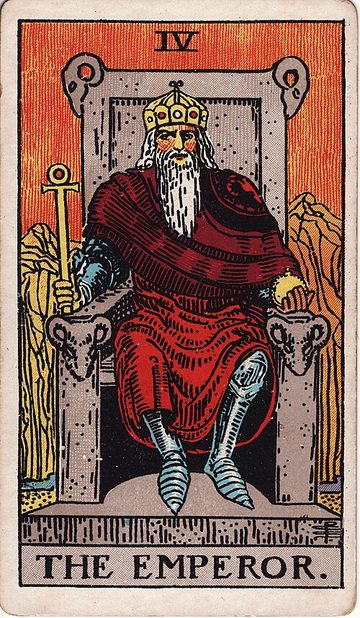
L卵巢與睪丸皇帝 The Emperor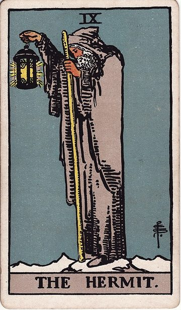
A丹田隱士 The Hermit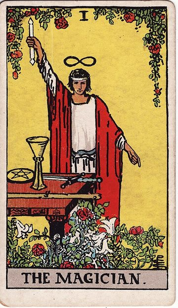
B心魔術師 The Magician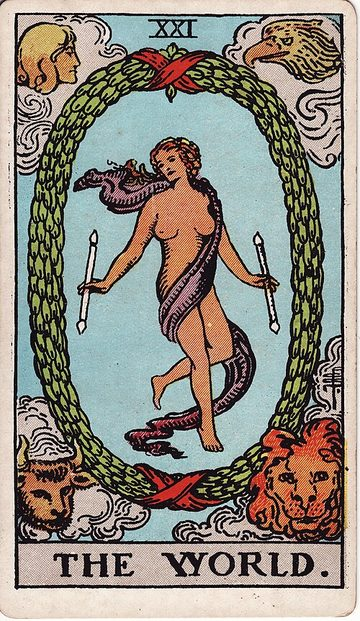
O小腸世界 The World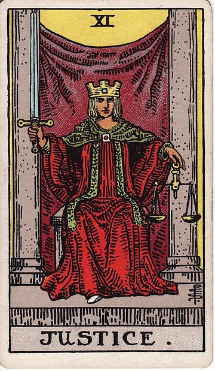
K十二指腸正義 Justice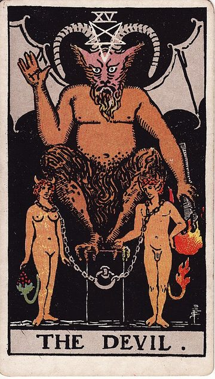
G胰臟惡魔 The Devil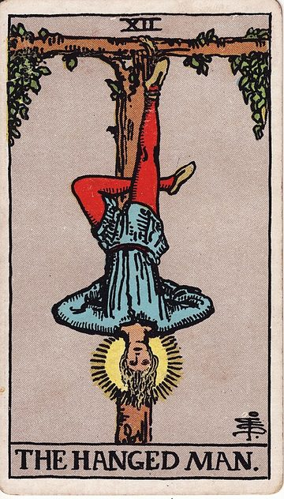
S肝臟吊人 The Hanged Man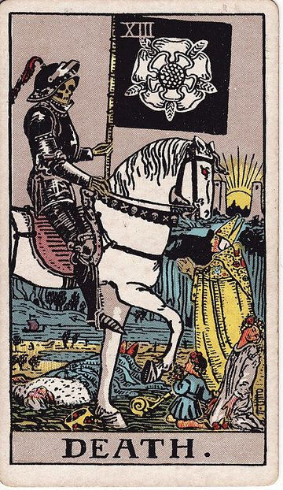
R膽囊死神 Death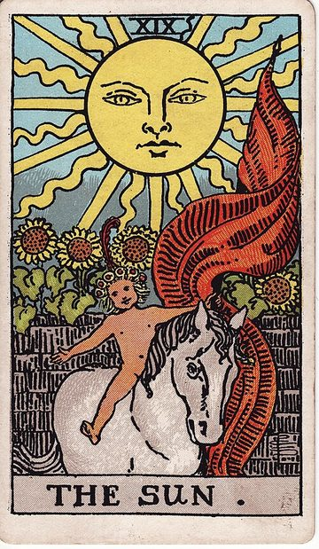
I陰道與陽具太陽 The Sun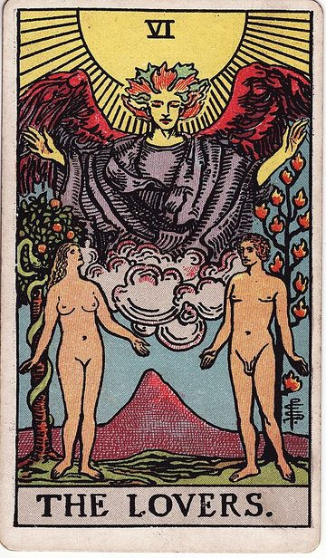
T副腎戀人 The Lovers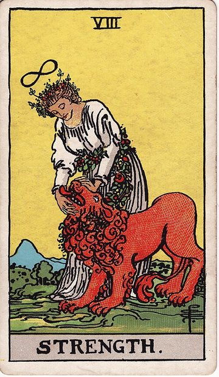
H膀胱力量 Strength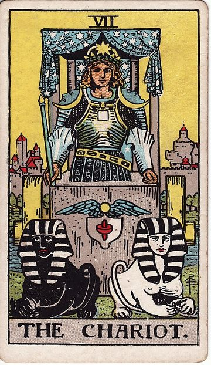
U腎臟戰車 The Chariot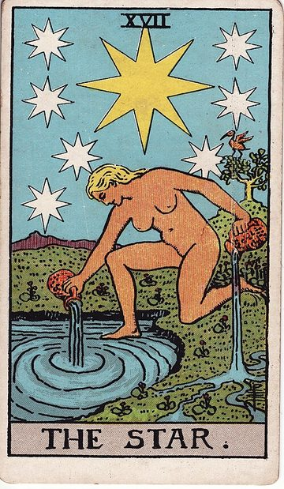
M脾臟星星 The Star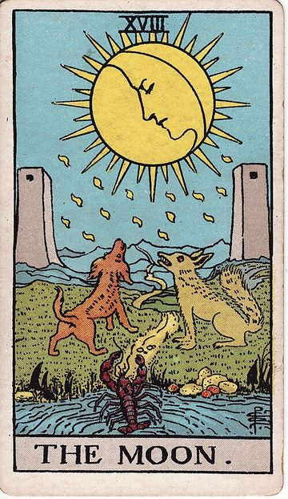
V胃臟月亮 The Moon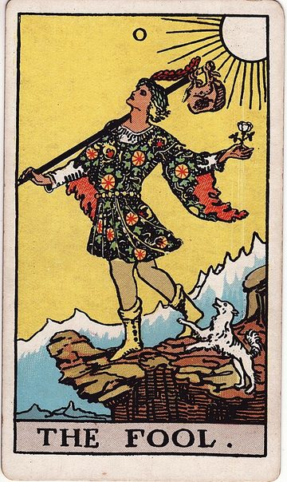
D喉嚨愚人 The Fool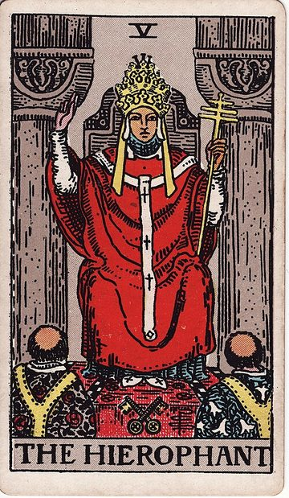
E舌頭教宗 The Hierophant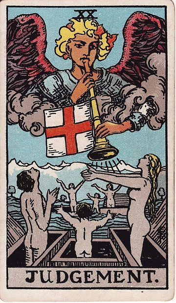
J尾椎薦椎審判 Judgement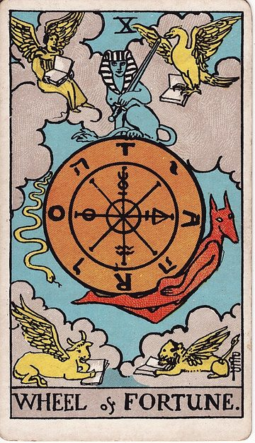
W橋腦命運之輪 Wheel of Fortune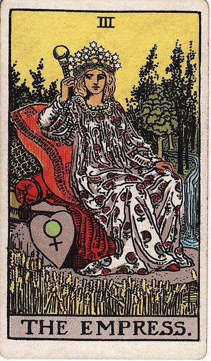
P大腸皇后 The Empress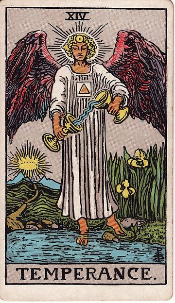
Q肺臟節制 Temperance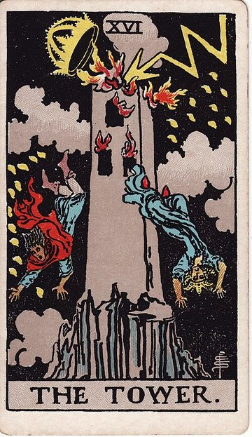
X雙腿塔 The Tower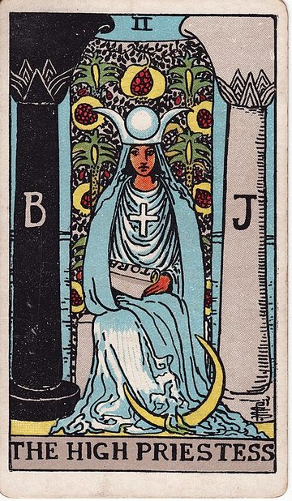
F手臂女祭司 The High Priestess牌圖來源：Rider–Waite–Smith Tarot（1909，Pamela Colman Smith 繪，公有領域）。器官圖卡原始圖像展示整理中，待補上架。
實際應用
- 讀眼診斷看出小腸位置的印記後，給予小腸的 New Mind——印記中有多少負電，就有相等的正電力量待以轉化。
- 入門課後的個案：讀眼後做 session，多年的乳房纖維囊腫在一個月後消失。（個案經驗分享，非療效保證）
學習路徑
讀眼是 Dheeraj 在普那社區金字塔教室的正式課程之一，學習順序依色波推進：紅波 → 綠波 → 藍波 → 黃波…… 讀眼術是確定工作方向的工具，不是目的本身。想學習讀眼，請先從脈動入門課開始—— 前往學員註冊。